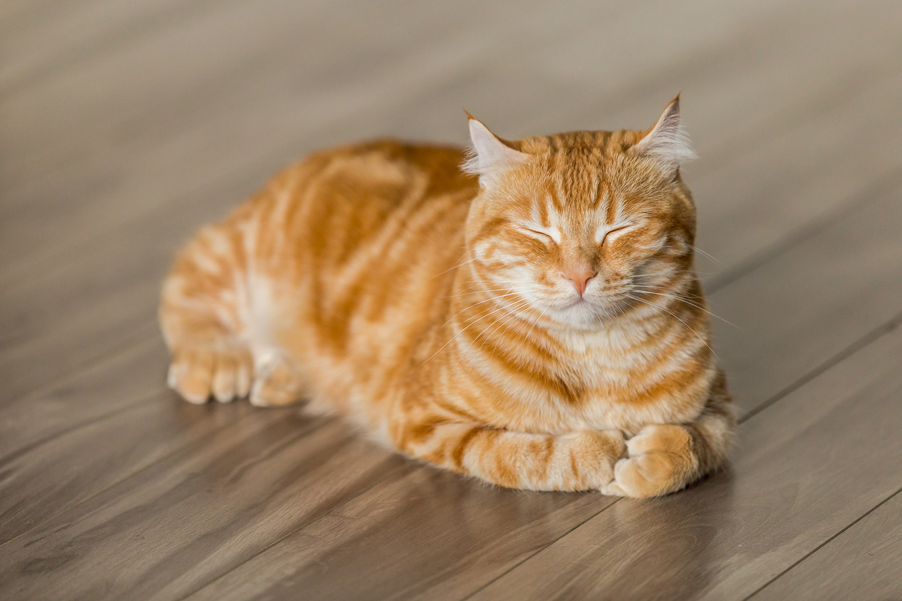

The movie had a dead cat problem.
As the director Marielle Heller prepared to shoot “Can You Ever Forgive Me?,” a biopic about the literary forger Lee Israel, she knew that she would need a highly realistic prop to pull off the pivotal scene where Israel finds her beloved pet cat, Jersey, dead. Heller wanted a dead cat with heft. She wanted an inanimate object that her star, Melissa McCarthy, could act against. “I was really intense about it,” Heller said over the phone recently. “We discussed strategy a number of times.”
So important was the dead cat that Heller sought to secure it even before casting the film’s real live Jersey. She’d just find a feline that looked like her wonderful prop. How much difference could the real one make, anyway? On her first film, “The Diary of a Teenage Girl,” she had saved money by tossing her own cat, Willie, in front of the camera. So when the movie’s animal trainer promised to bring in what she called her highest-performing cat, Heller wasn’t sure what that could mean. That it wasn’t going to pee everywhere?
The cat’s name was Towne. He was a lanky black and white guy with green eyes and a petal pink nose, and to everyone’s surprise, he was amazing. Yes, he followed directions — hitting his marks with the help of a trainer equipped with a clicker and a laser pointer — but he also seemed to do something more. “Towne had a very expressive face,” Heller said.
There is a moment in the film where he gazes toward McCarthy “sort of sympathetically, and also judgmentally, and you feel all of that,” she added. Heller ended up commissioning a prop modeled after Towne that cost thousands of dollars — the most expensive one for the production.
Towne’s efforts did not go unnoticed. “This cat is out-acting me,” McCarthy thought as they worked. “The Marlon Brando of cats,” Deadline raved upon the film’s release. Declared Jezebel: “This Cat Deserves an Oscar!”
Towne’s turn in “Can You Ever Forgive Me?” is emblematic of a new class of animal performances, ones that are recognized as much for what the animal does not do as for what it does. These animals are not filmed talking like humans or fetching things. They don’t shake hands or roll over. Instead they are captured somewhat naturalistically. Towne spends much of “Can You Ever Forgive Me?” gazing languidly from the couch. At the emotional core of “Roma” sits a family dog, its incessant barking, and its accumulating waste; Borras is a professional dog behaving as if woefully untrained. And in “Widows,” a fluffy white terrier named Olivia pants calmly, the image of unsuspecting innocence, as violent criminals creep around her. Olivia is “paving new ground for the canine acting community,” Alyssa Bereznak wrote at The Ringer, and she has ambled into her own grass roots Oscar campaign.
By these modern standards, Toto is an amateur. Mister Ed? A hack. A year of buzzy pet performances raises the question: Are animals getting better at acting?
Before we get to that, some sad news: After a decade-long career, Towne himself died last year. In a phone interview, his trainers described him as a really nice cat who loved people. He is survived by his look-alike brother, with whom he often acted.
Towne was never really acting, at least, not in the human sense. If animals have any “motivation” for their performances, it lies largely in delicious treats. Towne loved jars of baby food, while Olivia dined on hot dogs on the “Widows” set. Our sense of a “good” animal actor is a combination of its behavioral training and our own emotional projection.
But are they getting better?
They are, kind of.
Animals were among the first silent film stars, and they’ve been hailed as natural performers ever since. “A certain critical tradition has taken animals as the standard by which to judge all acting, animal or human,” said James Leo Cahill, a professor of cinema studies at the University of Toronto. The appeal lies in their “lack of self-consciousness before the camera.”
But while animals have often been coded as naturals, they have not always been filmed that way. It was once common to use physical restraints, shock collars and trip wires to produce unnatural animal behaviors on film. Consider the “Dogville” comic shorts that played before features in the 1930s, in which dogs appeared to play instruments, walk on two legs, and kiss each other, effects that could be achieved by attaching piano wire to the dogs’ limbs and manipulating their bodies like puppets.
Those practices drew protests from animal rights groups, and by the 1940s, animal welfare regulations had arrived in Hollywood. “One of the biggest shifts in how animals are filmed” arose from “cultural re-evaluations of what constitutes cruelty toward animals,” said Courtney E. White, an instructor at Columbia College Hollywood who studies the intersection of cinema and animal welfare. As Jonathan Burt noted in his 2002 book “Animals in Film,” the focus of filmmaking flipped from serving what the director wanted to what the animal needed.
The shift helped fuel a swiftly professionalizing animal training industry. A highly skilled and thoroughly prepared animal became much more important to a production’s success. Burt writes that while it was once typical for trainers to show up on set cold, they now received exacting instructions in advance. At the same time, training methods were growing more sophisticated: applying B.F. Skinner’s operant conditioning theories allowed trainers to reward more precise behaviors in animals and delay their gratification, too — helping animals to “act” in a scene without always looking to a trainer for instructions or treats.
As the treatment of animals changed, so did viewer expectations. Film became a powerful tool for animal rights activists, a trend that’s culminated in PETA’s sophisticated viral video operation. Modern audiences are now hypersensitive to images of animal harm. Just a whiff of force can make them uneasy, even when the animal on set is perfectly safe. Part of what was so unusual about Olivia in “Widows” was her apparent Zen calm even while in the clutches of a villain.
These changing norms can appear almost like a stylistic shift. Cahill calls the effect “not unlike pre- and post-Method acting, which dramatically changed the criteria upon which naturalistic acting was both approached and judged.” Today’s animals are, paradoxically, both better trained and styled as more “natural” than their predecessors.
It’s probably not a coincidence that “natural” animal actors are earning rapturous praise just as we enter a new era of unreal images, thanks to the rise of C.G.I. Olivia’s trainer, Greg Tresan of Animal Casting Atlanta, said that his animals are now routinely submitted for full body scans before filming. Disney’s forthcoming “live-action” adaptation of “The Lion King” will star a savanna of computer-generated animals. A performer like Towne — who, Heller assured me, was unassisted by C.G.I. — is now an outlier.
C.G.I. can achieve feats that real animals cannot, but like the piano wires before it, it can also disturb in its unreality. “A lot of film theory would argue that no matter how good the fake animal gets, it won’t produce the same emotional resonance in viewers as a real animal,” White said. Perhaps Hollywood’s wave of elaborate fake creatures has inspired a bit of a backlash, too, and a renewed desire for animal images that feel studiously real.
After all, on YouTube, hyper-realistic animal performances abound, filmed by amateurs who have all the time in the world to capture interesting behaviors from their pets. We’ve never been more aware of what cats and dogs look like in the natural wilds of our living rooms. The social internet is fueled by such images. Hollywood is panting to catch up.
 Back to Course Home Page